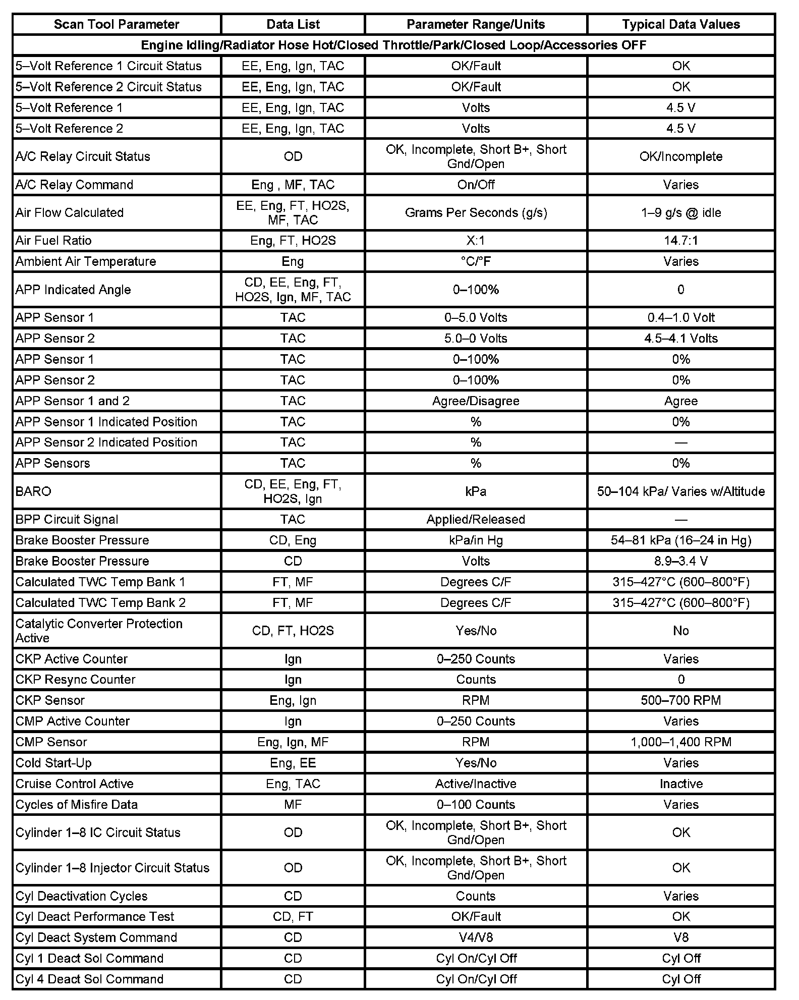
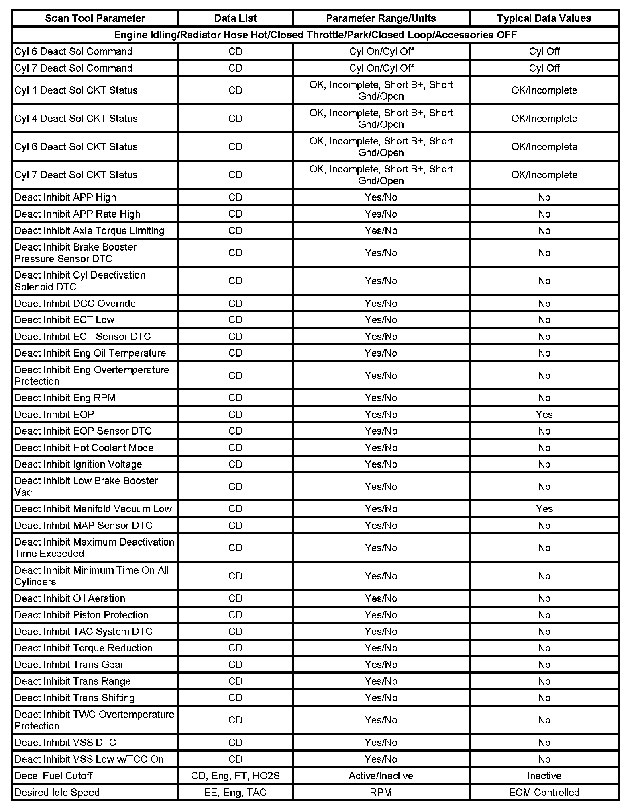
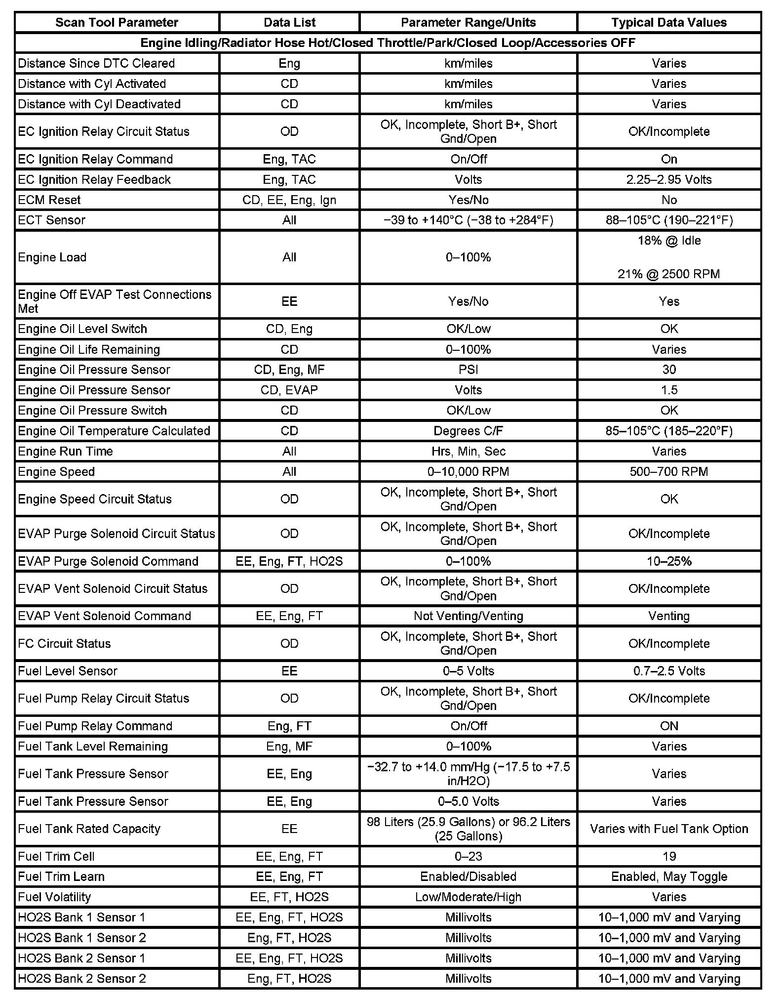
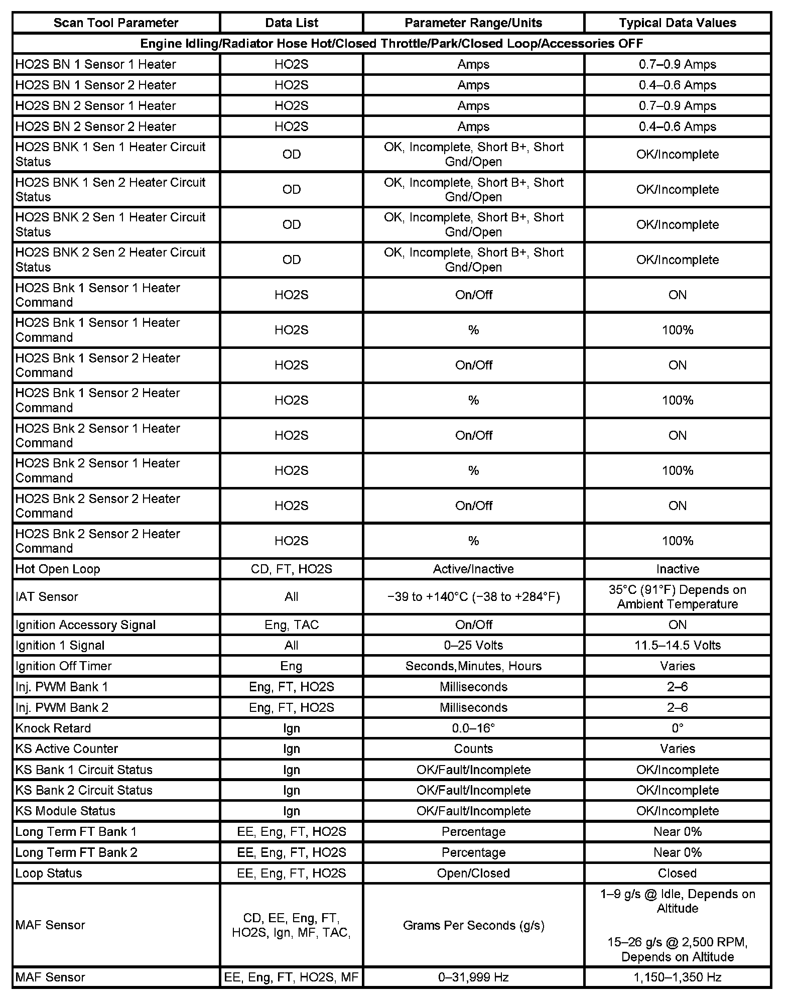
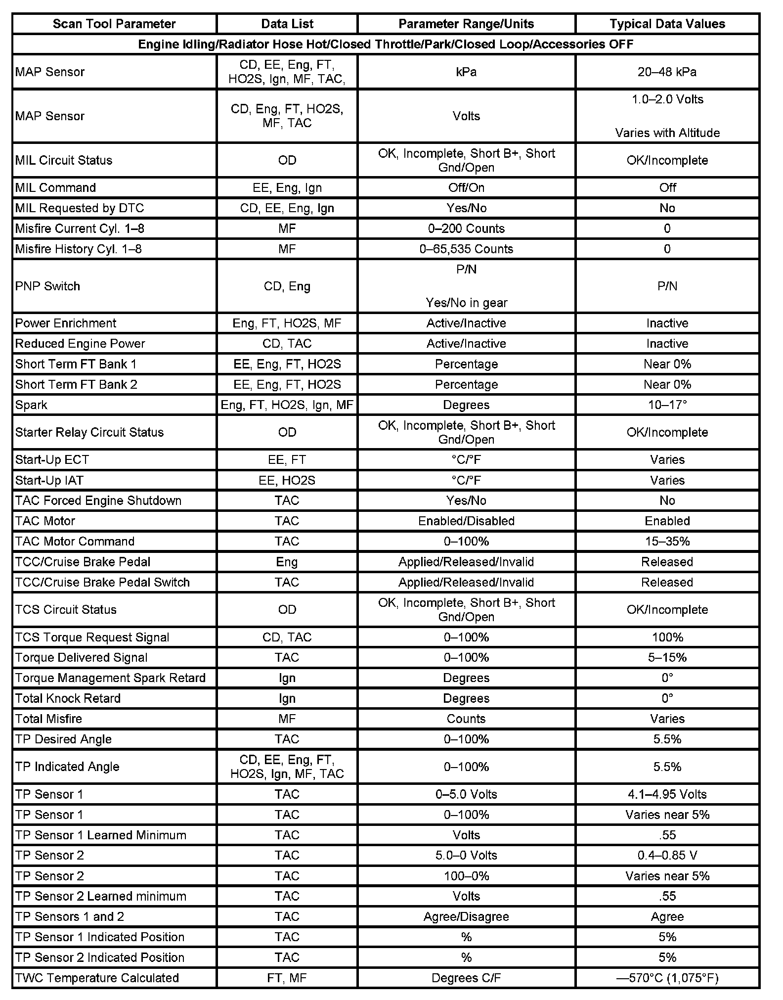
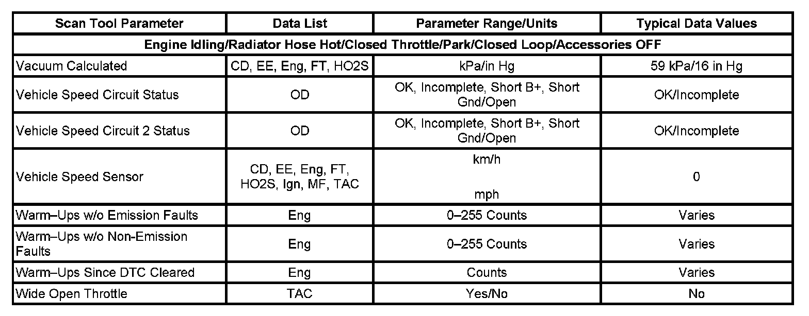

Scan Tool Data List
SCAN TOOL DATA LIST
Scan Tool Data List (Part 1):

Scan Tool Data List (Part 2):

Scan Tool Data List (Part 3):

Scan Tool Data List (Part 4):

Scan Tool Data List (Part 5):

Scan Tool Data List (Part 6):

The Engine Scan Tool Data List contains all engine related parameters that are available on the scan tool. The list is arranged in alphabetical order. A given parameter may appear in any one of the data lists, and in some cases may appear more than once, or in more than one data list in order to group certain related parameters together.
Use the Engine Scan Tool Data List only after the following is determined:
- The Diagnostic System Check - Vehicle is completed.
- No diagnostic trouble codes (DTCs)
- On-board diagnostics are functioning properly.
Scan tool values from a properly running engine may be used for comparison with the engine you are diagnosing. The Engine Scan Tool Data List represents values that would be seen on a normal running engine at idle.
IMPORTANT: A scan tool that displays faulty data should not be used. The scan tool problem should be reported to the manufacturer. Use of a faulty scan tool can result in misdiagnosis and unnecessary parts replacement.
Only the parameters listed below are referenced in this service manual for use in diagnosis. If all values are within the typical range described below, refer to Symptoms - Computers and Control Systems for diagnosis. - Symptoms - Engine Controls
The column labeled Data List indicates where a parameter can be located on the scan tool. Refer to the scan tool operating manual for the exact locations of the data lists. The following is a description of each term listed:
All: The Parameter is in all of the data lists indicated below.
CD: Cylinder Deactivation Data List
EE: Enhanced Evaporative Emission (EVAP) Data List
Eng: Engine Data List
FT: Fuel Trim Data List
HO2S: Heated Oxygen Sensor (HO2S) Data List
Ign: Ignition System Data List
MF: Misfire Data List
OD: Output Driver Data List
TAC: Throttle Actuator Control (TAC) Data List